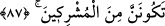
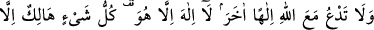
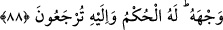

bir rahmet (olarak gelmiş) tir. O halde sakın kâfirlere arka çıkma!
Ey Muhammed! Sen, bu Kitâb’ın sana vahyolunacağını” yâni gönderileceğini ve
indirileceğini “ummuyordun.” Yani, nasıl ki Allah, ummadığın halde sana Kur’ân’ı
indirmişse, seni geldiğin yere de tekrar döndürecektir. Bu ifâde, önceki vaadin takrir ve
teyididir. Nitekim Keşfü’l-esrâr’da bu şekilde kaydedilmiştir.
“(Bu) ancak Rabbinden bir rahmet (olarak gelmiş)tir.” Yâni Rabbin bu Kitab’ı sana
bir rahmet olarak ilkâ etti, onunla amel et! Buradaki istisna, istisnâ-i münkatı’dır.
et-Te’vîlâtü’n-Necmiyye’de der ki: Sen, saf altın mevkiindeki husûsiyeti ile Kur’an-ı
Kerim’in, bakır cevheri konumundaki benliğini, altına çevirmek için sana
vahyolunacağını ummuyordun. Bu da ancak Rabb’inden bir rahmet iledir. Bu rahmet;
diğer peygamberler arasında sadece sana âiddir. Çünkü onların kitapları sâhife ve
levhalar şeklinde nazil olurken; senin kitabın Rûhu’l-Emin tarafından iksir ilkâsı gibi
kalbine ilkâ olunmuştur.
“O halde sakın kâfirlere arka çıkma!” Bilakis müminlere yardımcı ve destek ol.
87. Allah’ın âyetleri sana indirildikten sonra, artık sakın onlar seni bu âyetlerden
alıkoymasınlar. Rabbine dâvet et. Asla müşriklerden olma!
“Allah’ın âyetleri sana indirildikten” ve okunduktan “sonra, artık sakın onlar seni
bu âyetlerden alıkoymasınlar.” Yâni okumana ve gereği üzere amel etmene mâni
olmasınlar.
Bu âyet; Mekke müşriklerinin Rasûlullah (s.a.)’i, babalarının dinine dâvet edip
taptıkları putlara saygı göstermesini istedikleri ve bâtıl inançlarına ondan muvâfakat
taleb etmeleri üzerine nâzil olmuştur.
İnsanları“Rabbine” ibâdet etmeye ve O’nu tevhide “dâvet et. Asla müşriklerden
olma!” Onların bâtıl fiillerine yardımcı olma!
et-Te’vîlâtü’n-Necmiyye’de der ki: Hak tâliblerini ve âşıklarını, cennet ve
nimetlerine dâvet etmek suretiyle müşriklerden olma; onları cennet şirkinden hâlis
olarak yalnızca Rablerine dâvet et.
Fethu’r-rahman’da der ki: Âyetin tamamı, karşılıklı anlaşma ve sulhu içerir; fakat bu
âyetin hükmü, cihadı emreden âyetle (seyf âyeti) ortadan kaldırılmıştır (mensûh).